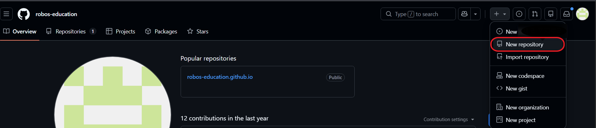
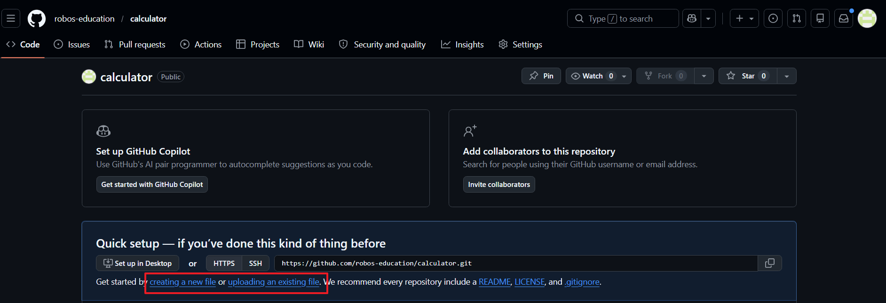

GitHub 가입 · Repository 생성 · 웹 페이지 배포
GitHub에 가입하고, 파일을 올리고, 실제 URL로 접근한다. 지난 Chapter에서 작성한 01_calcu_03.html을 배포한다.
1. GitHub 가입
- Sign up 클릭
- 이메일 주소 입력
- 비밀번호 설정
- username 입력 (영문, 숫자, 하이픈만 사용 가능)
- 이메일 인증 완료
username은 로그인 계정으로 사용할 수 있고, 나중에 변경할 수 있다.
하지만 접속 URL과 Web Site의 URL로 사용되기 때문에 신중하게 생성해야 한다.
github.com 접속 page 오른쪽 상단 프로필 클릭 → Settings → 왼쪽 메뉴의 Account → Change username 클릭 username은 URL에 그대로 사용된다.
예: username이robos-education이면 내 GitHub Pages 주소는https://robos-education.github.io가 된다.
2. Repository 생성
가입 후 로그인 상태에서 진행한다.
- 오른쪽 위 + 버튼 → New repository 클릭
-
아래 항목을 입력한다
-
Repository name:
calculator - Description: (선택) 간단한 설명 입력
- Public / Private: Public 선택
-
Add a README file: 체크 안 함
-
Create repository 클릭
Repository가 생성되면 파일이 없는 빈 상태의 페이지가 나타난다.

3. 파일 업로드 (GitHub 웹에서 직접)
Repository 화면에서 직접 파일을 올린다.
- uploading an existing file 링크 클릭
(또는 Add file → Upload files) 01_calcu_03.html파일을 드래그하거나 choose your files로 선택- 파일이 목록에 나타나면 아래로 스크롤
- Commit changes 버튼 클릭
파일이 저장소(Repository)에 추가된다.

4. GitHub Pages 설정
Repository에 올린 HTML 파일을 웹 페이지로 공개한다.
- Repository 상단 탭에서 Settings 클릭
- 왼쪽 사이드바에서 Pages 클릭
- Source 항목에서 Deploy from a branch 선택
- Branch를 main, 폴더를 / (root) 로 설정
- Save 클릭
저장 후 페이지를 새로고침하면 상단에 URL이 표시된다.
Your site is live at https://<username>.github.io/calculator/<파일명>.html
URL이 나타나기까지 1~2분 정도 걸릴 수 있다. 페이지가 열리지 않는다면 상단 Actions 탭에서 현재 배포한 Workflow가 초록색으로 바뀌었는지 확인한다.
5. Web Browser에서 확인
표시된 URL을 복사해서 브라우저 주소창에 붙여넣는다.
01_calcu_03.html이 나타나면 배포가 완료된다.
URL 구조는 다음과 같다.
https://<username>.github.io/<repository-name>/01_calcu_03.html
6. index.html과 URL
GitHub Pages는 폴더 URL로 접근할 때 index.html을 자동으로 찾아서 열어준다.
만일 index.html이 있으면 URL에서 파일 이름을 생략할 수 있다.
| 파일 이름 | 접근 URL |
|---|---|
01_calcu_03.html |
https://<username>.github.io/calculator/01_calcu_03.html |
index.html |
https://<username>.github.io/calculator/ |
index.html 만들기
- Repository code 화면에서 Add file → Create new file 클릭
- 파일 이름 입력란에
index.html입력 - 아래 코드를 입력한다
<!DOCTYPE html>
<html lang="ko">
<head>
<meta charset="UTF-8">
<title>홍길동의 페이지</title>
</head>
<body>
<h1>안녕하세요, 홍길동입니다.</h1>
<p><a href="01_calcu_03.html">계산기 바로가기</a></p>
</body>
</html>
- 아래로 스크롤 → Commit changes 클릭
Commit이 완료되면 아래 URL로 접근할 수 있다.
https://<username>.github.io/calculator/
Git으로 배포하는 방법 (참고)
위에서는 GitHub 웹 화면에서 직접 파일을 올렸다. 실제 개발 현장에서는 Git이라는 도구를 사용해서 터미널에서 파일을 올린다.
Git은 파일의 변경 이력을 관리하는 도구다. GitHub는 Git으로 관리되는 파일을 저장하는 원격 저장소다.
터미널에서 아래 순서로 진행한다.
Git 설치 확인
git --version
버전 정보가 출력되면 설치된 상태다. 설치가 안 되어 있으면 git-scm.com에서 다운로드한다.
최초 1회: 사용자 정보 등록
git config --global user.name "이름"
git config --global user.email "이메일"
Repository 연결 · 파일 올리기
# 1. 작업 폴더로 이동
cd calculator-폴더-경로
# 2. Git 초기화
git init
# 3. 원격 repository 연결
git remote add origin https://github.com/<username>/calculator.git
# 4. 파일을 스테이징 (올릴 파일 지정)
git add 01_calcu_03.html
# 5. 변경 내용 저장 (commit)
git commit -m "calculator 추가"
# 6. GitHub에 올리기 (push)
git branch -M main
git push -u origin main -f
# -f 옵션: 강제 실행, 꼭 필요할 경우만
# 7. login 정보 지우기
control /name Microsoft.CredentialManager
# 윈도우가 뜨면 목록에서 git:https://github.com을 찾는다.
# 해당 항목의 오른쪽 화살표를 눌러 **[제거]**
git push
# 로그인 창이 다시 나타난다면 자격증명이 지워진 것
Push가 완료되면 GitHub repository에 파일이 올라간다. 이후 GitHub Pages 설정은 웹 방식과 동일하다.
이번 챕터 실습은 웹에서 직접 올리는 방식으로 진행한다.
Git 명령어는 Chapter 7에서 실제로 사용한다.
정리
| 단계 | 내용 |
|---|---|
| GitHub 가입 | 이메일로 계정 생성, username 설정 |
| Repository 생성 | Public, 이름은 calculator |
| 파일 업로드 | 웹 화면에서 01_calcu_03.html 업로드 |
| GitHub Pages 설정 | Settings → Pages → main branch |
| 확인 | https://<username>.github.io/calculator/01_calcu_03.html |